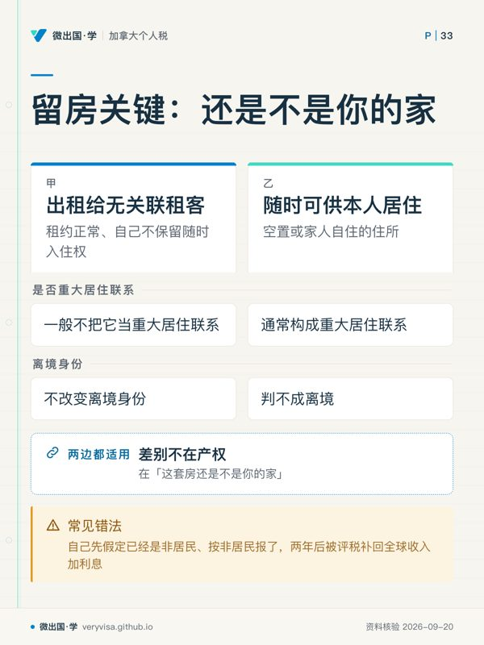
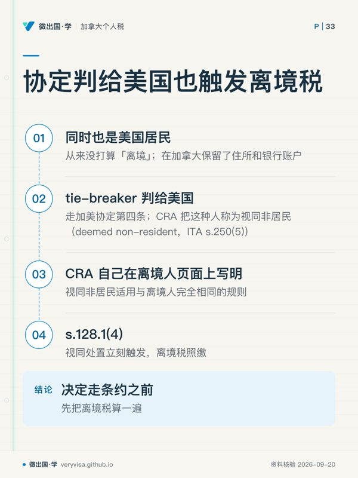
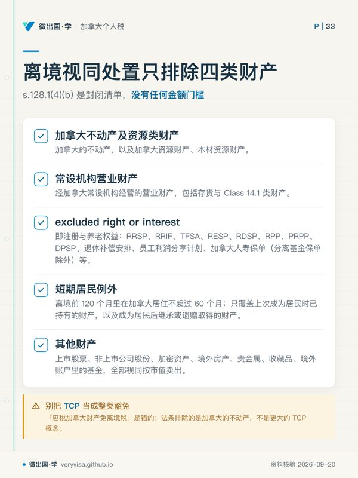

核实日期：2026-09-05｜现行口径：2026 税年（2027 年春季申报）｜联邦法条现行至 2026-08-20，加美协定现行至 2007 年第五号议定书。 本页有两类数字：逐年指数化的（OAS 回收门槛、抵免率、注册账户额度）复核期到 2027-01-31；写在法条与表格上、多年不动的（25,000 加元（2026 税年；已生效；官方公布值）、$10,000、16,500 加元（2026 税年；已生效；官方公布值）、25%、$25/天）另标长青。凡考试口径 2024 税年值与现行不同的，正文一律三列并排。
你决定离开加拿大了。机票订好、房子挂出去、工作交接完，接下来最容易被漏掉的一件事是：加拿大不会因为你人走了就放弃对你这些年积累的增值的征税权，它要在你跨出国境的那一刻先跟你结一次账。 这一笔叫离境税（departure tax），它不是一个新税种，是资本利得税的一次强制提前结算。走完这一关之后，你和加拿大的关系换成另一套规则：加拿大只对你的加拿大来源收入征税，多数被动收入由付款方按 25% 扣走就算完，而少数几类收入你反而应该主动去报一张表，因为报了能退钱。这一页讲清三件事：离境那一年那张 T1 要怎么填、离境后哪些收入被扣多少、以及在什么情况下你作为非居民仍然必须报 T1。读完你应该能做到：说出自己成为非居民的具体日期并给出依据；判断名下每一项财产会不会被视同处置、要不要列进离境财产清单；对着一份加拿大来源收入清单说出每一项该扣多少、能不能降。
本页假定你已经知道税务居民身份是怎么判出来的。判定链本身在 ca-residency-01-newcomers 与 ca-residency-02-residency-determination 两页；协定 tie-breaker 那一层在 xb-01-treaty-tiebreaker。
ℹ️
这一页的两条口径线
第一条是考试口径年份 vs 现行年份：本课考试口径主口径是 2024 税年，本页目标口径是 2026 税年，凡指数化的数正文给三列。 第二条是法条 vs 表格 vs 协定：离境这一块最乱的地方在于同一个概念在三个地方有三套边界——法条排除哪些财产不视同处置、表格要求列报哪些财产、协定又把哪些付款的税率降下来。三者范围互不相同，混用是本页要拆掉的头号错误。
一、制度设计与底层逻辑：加拿大在国境线上设了一道结算闸
1.1 为什么必须有离境税
加拿大对居民就全球收入征税，对非居民只就加拿大来源的特定收入征税。这套设计有一个天生的漏洞：一个人在加拿大居住二十年，手里的股票从 $50,000 涨到 $500,000，如果他在卖出前一天搬去一个不征资本利得税的地方，加拿大就一分钱也收不到——增值全部发生在加拿大居民期，税却因为一次搬家而蒸发。
《所得税法》(Income Tax Act, ITA) s.128.1(4) 就是堵这个洞的：在你不再是加拿大居民的那一刻之前一瞬，你名下的财产被视同按公允市值卖出，并在同一刻按同一价格买回（CRA、加拿大联邦法规库）。你没有真的卖，也没拿到一分钱，但产生的资本利得要进离境年那张 T1。执业上把这笔多出来的税叫「离境税」，法条里没有这个词。
理解这条规则的正确姿势是把它和入境那一条并排看。ITA s.128.1(1) 规定在实际成为税务居民时，对适用财产视同按市值重新取得；法定排除财产另核（加拿大联邦法规库）——效果是把成本基础抬到登陆日市值，登陆前的增值不进加拿大税基。两条合起来看，一般入境和离境视同规则可划分加拿大税基，但TCP、注册计划、短期居民例外及条约等均须单列，不能断言全部资产恰好只课居民期间增值。所以离境税不是罚你走，是关上账本；把它当成惩罚性条款的人，往往会做出「先卖掉再走」的错误动作，不能仅凭离境与实际出售的先后断言税负高低，须比较两国规则、亏损和现金流（真卖出的利得也一样课税，还额外损失了递延与择时的余地）。
1.2 哪一天算走：三个日期取最晚

这是整页最先要定死的一个数，因为后面所有计算都挂在它上面。CRA 的口径是：你通常在下面三个日期中最晚的那一个成为非居民（CRA）——
- 你本人离开加拿大的日期；
- 你的配偶或同居伴侣与受养人离开加拿大的日期；
- 你在新定居国成为该国居民的日期。
「取最晚」这三个字每年都要坑掉一批人。丈夫 3 月先走去新工作、妻儿等孩子学期结束 7 月才走，那么这家人的离境日是 7 月，不是 3 月——3 月到 7 月之间丈夫在境外挣的钱，仍然是加拿大居民期的全球收入，要报。反过来也有一条对读者有利的例外：如果你原本就来自某国、现在回那个国家，通常就按你本人离开的日期算，即使配偶暂时留下卖房也不改变（CRA）。
同时要过的另一道判据是居住联系是否切断。CRA 把「切断」落成三件事：处置或放弃加拿大的住所并在他国建立永久住所、配偶与受养人随行、处置个人财产并把社会联系转到他国（CRA（1、2））。人走了但住所留着、配偶留着，通常仍是事实居民，不是离境人——这时候按全球收入报税，离境税一分不发生。
⚠️
「我把房子留着出租」不改变离境身份，但要看留的是什么房
保留一处出租给无关联租客、租约正常、自己不保留随时入住权的房产，CRA 一般不把它当重大居住联系；保留一处随时可供本人居住的空置或家人自住的住所，则通常构成重大居住联系，判不成离境。差别不在产权，在「这套房还是不是你的家」。判不清的人常见错法是自己先假定已经是非居民、按非居民报了，两年后被评税补回全球收入加利息。
1.3 一条最反直觉的入口：赢了协定 tie-breaker 也会触发离境税
有一类人从来没打算「离境」——他在加拿大保留了住所和银行账户，只是同时也是美国居民，走加美协定第四条的 tie-breaker 判给了美国。CRA 把这种人称为视同非居民（deemed non-resident，ITA s.250(5)），而 CRA 自己在离境人页面上写明：视同非居民适用与离境人完全相同的规则（CRA）。
也就是说，协定 tie-breaker 一旦判给对方国家，s.128.1(4) 的视同处置立刻触发，离境税照缴。这是跨境读者最贵的一个盲点：他们以为条约只是「换个国家算税」，没想到换的那一刻加拿大先结了一次账。tie-breaker 的四级顺序与 Form 8833 披露义务在 xb-01-treaty-tiebreaker；这一页只提醒结论——决定走条约之前，先把离境税算一遍。
1.4 错了会怎样：罚的是没交表，不是没交税
离境这一块的罚则有一个共同形态：罚款挂在「有没有按时交那张表」上，与你实际欠不欠税无关。
- 未按期交 T1161（离境财产清单）：ITA s.162(7)，每天 $25、最低 $100、最高 $2,500（CRA）。哪怕你当年不用报 T1，这张表也得单独寄到。
- 非居民卖加拿大应税财产未在 10 天内通知 CRA：同一条 s.162(7)，同样的 $25/天、$2,500 封顶（CRA）。
- 逾期报 T1 本身：s.162(1) 的 5% + 每整月 1%、最多 12 个月，基数是申报期限时尚未缴付的税——离境年如果税已缴清或本来就退税，这一格是零。
- 未按期交 OASRI（T1136）：不罚钱，但当年 7 月起 OAS 停发（CRA）。
✕
离境财产清单是「不欠税也要交」的表
一个只带着 $60,000 现金、$120,000 上市股票（成本 $118,000）离境的人，离境税只有几百块，甚至因为亏损为零；但只要离境时名下财产市值合计超过 25,000 加元（2026 税年；已生效；官方公布值），T1161 就必须交，逾期上限 $2,500 的罚款和这几百块税完全不成比例。这张表的经济学是荒谬的，但规则就是这样，所以它值得单独列进离境清单第一行。
二、2026 税年现行规则与数字
2.1 离境年的那张 T1：一张表，两段人生
离境年你仍然报一张 T1，但这张表在内部被切成两段（ITA s.114 的部分年度居民规则）：
- 居民期：报全球收入（world income），扣除与抵免按居民身份处理；
- 非居民期：只报加拿大来源的、属于 Part I 的收入（加拿大雇佣、加拿大营业、处置应税加拿大财产的应税利得等）。已被 Part XIII 扣走 25% 的被动收入不进这张表（CRA）。
三个填表位置要记死（CRA）：
- 离境日期填在第 1 页 Residence Information 区，这一格决定了后面所有比例计算的分子；
- 用哪一份省税包：用你离境当日所居住省的税包，不是 12 月 31 日（12 月 31 日你已经不在加拿大了）。BC 居民走 BC428；
- 配偶的全球净收入填的是居民期那一段的数，不是全年。
抵免的算法与新移民那一年是镜像的，法源是 ITA s.118.91（加拿大联邦法规库）：额度型抵免（基本个人额、老年额、配偶额等）按居民天数比例申报；支出型抵免（医疗费、捐赠、学费）按实际发生在居民期内的金额据实申报。两段相加不得超过全年居民本可申报的额度——这句硬顶写在条文结尾。
非居民期那一段还想报抵免的，要过 ITA s.118.94 那道门：只有在「全部或几乎全部」收入都计入加拿大应税收入时才行（加拿大联邦法规库）。「90%」这四个字条文里没有，是 CRA 的行政口径——条文写的是 all or substantially all。所以 89% 不是自动出局，但你要准备好和 CRA 争。
⚠️
离境年的省税credits与联邦credits不是同一个开关
联邦非退还抵免按上面两段算；省的可退还抵免（BC 的 climate action credit 一类，走 Form 479 那一格）原则上要求 12 月 31 日仍是加拿大居民（CRA），离境的人当年就拿不到。很多人以为「我今年在加拿大住了十个月，福利当然按十个月给」——不是，这一类是开关型不是比例型。
2.2 视同处置：法条只排四类财产，里面没有任何金额门槛
ITA s.128.1(4)(b) 把不视同处置的财产列成一份封闭清单，对个人来说是四类（加拿大联邦法规库）：
- 加拿大的不动产，以及加拿大资源财产、木材资源财产；
- 通过加拿大常设机构经营的营业财产，包括存货与 Class 14.1 类财产；
- excluded right or interest（法定用语，可读作「注册与养老权益」）：RRSP、RRIF、TFSA、RESP、RDSP、RPP、PRPP、DPSP、退休补偿安排、员工利润分享计划、加拿大人寿保单（分离基金保单除外）等；
- 短期居民例外：离境前 120 个月里在加拿大居住不超过 60 个月的人，其「上次成为居民时已持有的财产」与「成为居民后继承或遗赠取得的财产」。
除此之外的一切——上市股票、非上市公司股份、加密资产、境外房产、贵金属、收藏品、境外账户里的基金——全部视同按市值卖出。
⚠️
「应税加拿大财产免离境税」是错的
这是本页最容易被坊间文章带偏的一条。法条排除的是「加拿大的不动产」，不是「应税加拿大财产（taxable Canadian property, TCP）」这个更大的概念。2010 年 3 月之后，TCP 还包括价值主要来自加拿大不动产的非上市公司股份——一家自己开的、名下持有一栋温哥华商铺的控股公司，它的股份既是 TCP、又不在排除清单里，所以照样被视同处置，而且日后真卖时还要再走一遍 s.116 清税证明。一份财产被课两次程序、一次税，是加拿大房产控股结构在离境时最贵的一个坑。
反过来，法条还给了一条主动纳入的口子：s.128.1(4)(d) 允许个人以规定表格选择把第 1、2 类财产也纳入视同处置（用 Form T2067A）。为什么有人会主动多缴税？因为离境年如果手里有未用完的资本亏损，制造一笔可控的利得把亏损吃掉，比把亏损带到一个日后再也用不上的非居民身份里划算得多。这条是离境筹划里少数几个真正的操作杠杆之一。
还有一条回流用的撤销权：s.128.1(6) 规定，若你日后重新成为加拿大居民且当年离境时申报过视同处置的那些财产还在手上，可以书面选择撤销当年的视同处置（把当年申报的处置所得下调，最多下调到当年申报的全部利得）。没有专用表格，写信提交，期限是回流年度的申报到期日。撤销之后成本基础回到离境前的原值，等于当年的离境税被追溯抹掉（对 TCP 与非 TCP 各是一次全有或全无的选择，不能挑单件）。
2.3 T1161 / T1243 / T1244：三张表各管一件事，别串
| 表 | 管什么 | 触发条件 | 期限 |
|---|---|---|---|
| T1161 离境人财产清单 | 列报（不算税） | 离境时名下财产排除规定财产后的公允市值合计 > 25,000 加元（2026 税年；已生效；官方公布值） | 报税到期日；不用报 T1 的人也要单独寄 |
| T1243 离境视同处置 | 计算当年的视同利得/亏损 | 有第 2.2 节所述被视同处置的财产 | 随 T1 与 Schedule 3 一并提交 |
| T1244 递延纳税选择 | 递延这笔税到真卖那天 | 想递延的人自愿提交 | 离境次年的 4 月 30 日，不应假定逾期仍获受理 |
三条最容易混的边界：
第一，25,000 加元（2026 税年；已生效；官方公布值） 与 $10,000 是两个不同用途的数。 25,000 加元（2026 税年；已生效；官方公布值） 是要不要交 T1161 这张清单的门槛，按离境时名下财产的市值总额判；$10,000 是单件个人使用财产（家具、衣物、汽车、收藏品）可以不列进清单的免列线（CRA、ITA s.128.1(9)）。一辆市值 $35,000 的车要列，两辆各 $8,000 的车都不用列，但它们的市值要不要计入那个 25,000 加元（2026 税年；已生效；官方公布值） 的总额判断——按表格措辞，四类排除项是从「你拥有的全部财产」里先剔除再判门槛。两个数都不指数化，从设立至今没动过。
第二，T1161 的排除项与 s.128.1(4) 的排除项范围不一样。 T1161 不用列现金与银行存款、不用列注册账户与养老权益、不用列短期居民的入境前财产、不用列单件低于 $10,000 的个人使用财产（CRA）；但加拿大的不动产要列——它免视同处置，不免申报。反过来，境外的房产既要列、也要视同处置。免税 ≠ 免申报，这是本页第二条要拆掉的混淆。
第三，T1243 报的是利得，T1244 递延的是税。 递延的门槛在 T1244 上写得很明白：联邦税额超过 16,500 加元（2026 税年；已生效；官方公布值）（原魁北克省居民为 13,777.5 加元（2026 税年；已生效；官方公布值））时才需要提供担保；不足这个数的不用担保，但表照交（CRA）。递延期间 CRA 不计利息，代价只是把这张表和一份财产清单留在案上，直到财产真被处置。而且可以只对部分财产递延——实务上的常规做法是：随时能卖的上市股票直接缴清，流动性差的（未上市股权、艺术品、私募基金份额）递延。
🔧
离境税「交不起」几乎不该发生
视同处置产生的是账面利得而不是现金，一个手里全是未上市股权的人可能面对六位数的税单却一分钱现金都没有。16,500 加元（2026 税年；已生效；官方公布值） 的担保门槛加上无限期无息递延，正是为这种情形设的。应在离境次年4月30日前提出；逾期补救须个别核条文和CRA处理，不能当常规延长期。 所以离境清单上 T1244 的位置应该紧挨着 T1243，而不是等收到税单才想起来。
2.4 离境之后：Part XIII 的 25% 是底盘，协定是减免
非居民的加拿大税分成互不相通的两条轨（CRA）：
- Part XIII（被动收入）：付款方在支付时按 25% 扣走并汇给 CRA，普通T1一般不将其改为累进税；合格收入可另核s216/s217选择，错扣或多扣则可用NR7-R退款。法源是 ITA s.212(1)（加拿大联邦法规库）。
- Part I（主动收入）：加拿大雇佣所得、在加拿大经营的营业所得、处置应税加拿大财产的应税利得、应税奖学金研究金——必须报 T1，按累进税率算，还要加 ITA s.120(1) 的联邦附加税 48% 顶替省税（加拿大联邦法规库），除非该收入是在某个省内赚得的（那样就按该省算省税）。
税收协定只能下调 25%，不能上调，也不改变要不要报表。加美之间各类收入的现行率如下（依据在协定第五号议定书与合订本，U.S. Department of the Treas…、IRS（Treasury 条约文本）、IRS（Treasury 条约文本））：
| 加拿大来源收入 | ITA 法定率 | 加美协定率（收款人为美国居民） | 依据与要点 |
|---|---|---|---|
| 股息 | 25% | 15%（公司持股 ≥10% 有表决权股份为 5%） | 协定第十条第 2 款；5%档须满足公司及持股、协定资格条件，个人通常不适用 |
| 利息（非关联方） | 已免 | 0% | 加拿大国内法本身就免非关联方利息；协定第十一条另给一条独立路径 |
| 利息（关联方） | 25% | 0% | 第五号议定书把第十一条整条换成「只由居住国征税」，一般可适用，另核或有利息、超额关联利息、反混合及协定资格 |
| 加拿大不动产租金（毛额） | 25% | 25%，协定不减 | 不动产所得由所在国无限制征税；这正是 s.216 选择存在的理由 |
| 定期养老金给付（RPP、合规的 RRIF 提取） | 25% | 15% | 协定第十八条第 2(a) 款，只对「定期给付」封顶 |
| RRSP 一次性提取、RRIF 超额提取 | 25% | 25%，协定不减 | 不属「定期养老金给付」，定义见下文 |
| CPP / OAS | 25% | 0%（加拿大不征） | 协定第十八条第 5 款：社会保障给付只由居住国征税 |
⚠️
「协定 15%」是给付款形态的，不是给账户的
协定只对 periodic pension payment（定期养老金给付） 封顶 15%，而这个词的加拿大法定定义写在《所得税协定解释法》s.5（加拿大联邦法规库）：RRSP 的到期前提取与全部/部分兑现一律不算——所以直接从 RRSP 给非居民打钱，通常适用Part XIII法定率，再核具体协定、付款性质及选择申报；RRIF 当年提取额超过「两倍法定最低额」与「年初市值 10%」两者中的较大者时，超出的那部分也不算定期给付，按 25% 扣。 实务推论很直接：想按 15% 把退休金拿出来，路径是先把 RRSP 转成 RRIF、再在上述上限之内分年提取；一次性清空 RRSP 换来的是 25% 预扣，还要在美国那一侧处理时点错配。CRA 的居民提取预扣三档（$5,000 以下 10%、$5,000–$15,000 20%、$15,000 以上 30%）对非居民完全不适用，非居民先核Part XIII及适用协定，而非照居民三档预扣（CRA）。
2.5 三列表一：写在法条与表格上的门槛与罚则（长青类）
这一组数的价值不在于「今年是多少」，而在于它们多年不动，所以考试口径那一年的值现在照样能用——这在本课里是少数。
| 项目 | 2024 税年（考试口径） | 2025 税年 | 2026 税年现行 | 状态 |
|---|---|---|---|---|
| T1161 申报门槛（离境时财产市值合计） | 25,000 元 | 25,000 元 | 25,000 元 | 已生效·不指数化 |
| T1161 单件个人使用财产免列线 | $10,000 | $10,000 | $10,000 | 已生效·不指数化 |
| T1161 逾期罚（每日／下限／上限） | $25 ／ $100 ／ $2,500 | 同左 | 同左 | 已生效·s.162(7) |
| T1244 递延须提供担保的联邦税额门槛 | 16,500 元 | 16,500 元 | 16,500 元 | 已生效·魁省口径 13,777.5 加元（2026 税年；已生效；官方公布值） |
| Part XIII 法定预扣率 | 25% | 25% | 25% | 已生效·s.212(1) |
| s.116 买方预扣（一般／可折旧等特定财产） | 25% ／ 50% | 同左 | 同左 | 已生效 |
| s.116 卖方通知期限 | 处置后 10 天 | 同左 | 同左 | 已生效 |
| 短期居民例外的居住期门槛 | 120 个月内不超过 60 个月 | 同左 | 同左 | 已生效·s.128.1(4)(b)(iv) |
出处：T1161 与 T1244 表格正文（CRA（1、2））；ITA s.128.1(4)、s.212(1)、s.116(5)（加拿大联邦法规库（1、2、3））；s.162(7) 罚则金额（CRA（1、2））。
2.6 三列表二：每年会动的那几个数
| 项目 | 2024 税年（考试口径） | 2025 税年 | 2026 税年现行 | 状态 |
|---|---|---|---|---|
| OAS 回收税（clawback）门槛 · 全球净收入 | 90,997 元 | 93,454 元 | 95,323 元 | 已生效·逐年指数化 |
| 联邦最低税阶率（＝非退还抵免的折算率） | 15% | 14.5% | 14% | 已生效·C-4 于 2026-03-12 御准 |
| s.217 选择下抵免额的封顶率（不足 90% 时） | 15% × 合格收入 | 14.5% × 合格收入 | 14% × 合格收入 | 已生效·随最低税阶联动 |
| TFSA 年度供款额度 | $7,000 | $7,000 | $7,000 | 已生效·连续第四年未变 |
| BC 省基本个人额（离境年按比例申报） | 12,580 元 | 12,932 元 | 13,216 元 | 已生效·逐年指数化 |
| BC 投机与空置税税率（非居民／外国业主） | 2% | 2% | 3%（2027 年 4%） | 已生效·连涨两级 |
出处：CRA 指数化总表（CRA）给 OAS 门槛与 TFSA 额度四年值；最低税阶率的三年裁决与 C-4 御准日在；s.217 封顶率的算法与「不足 90% 取小」规则在 T4145 指南（CRA，指南按 2025 税年写 14.5%，2026 税年应换成 14%）；BC 基本个人额见 BC 省政府；BC 投机与空置税税率见 BC 省政府。
ℹ️
考试口径那一栏为什么仍然有用
本课的考试口径停在 2024 税年，而上面第一张表里的八项，考试口径那一栏和现行一模一样。这说明离境这一块的知识结构是「机制稳定、数值稳定」的少数领域——真正每年要重抓的只有第二张表的六行。年度更新时先跑指数化总表和 BC 那两页，第一张表确认法条没改即可。
三、实务流程：从离境前三个月到成为非居民之后的每一年
3.1 离境前要做的六件事
- 确定离境日（三个日期取最晚），并把它写进一份自己的备忘：后面每一个比例、每一张表都用它。
- 给每一项财产拍一张市值快照：离境日的市值、成本基础、取得日期。视同处置的计税基础就是这张表，而 CRA 可能在很多年后才问起。
- 通知付款方与金融机构：CRA 明文要求你告知所有加拿大付款方与金融机构你已不是居民（CRA）。不通知的后果是他们继续按居民规则处理，该扣 25% 的没扣，两三年后 CRA 找上门，而法定的扣缴责任在付款方——你会同时得罪银行和税局。
- 算一遍 OAS 的 20 年条件：18 岁之后在加拿大住满 20 年的人可以终身在境外领 OAS；不满 20 年的，成为非居民后只能领到离境当月起的第 6 个月月末（ESDC）。这条与税无关，但对临近退休的人来说，可能比全部税务筹划加起来还值钱。
- 决定注册账户各自怎么处理（见 3.5）。
- 如果名下有加拿大不动产：决定是留着出租（走 3.3）还是走前卖掉（走 3.4）——两条路的现金流与程序完全不同，走后再卖比走前卖多一整套 s.116 程序。
3.2 离境年的申报动作
报一张 T1（用离境日居住省的税包），随表附：Schedule 3（资本利得）、T1243（视同处置明细）、必要时 T1161（财产清单）、想递延则加 T1244。期限与普通 T1 相同：4 月 30 日（有加拿大营业则 6 月 15 日，欠税仍 4 月 30 日到期）。
✕
T1244 的期限是硬的
递延选择必须在离境次年 4 月 30 日之前提交（CRA）。这一天过了，即使 T1 本身还在正常的申报期内（比如有营业收入可到 6 月 15 日），递延也不再受理，整笔离境税立刻到期。这是本页唯一一个「晚一天就多掏几万块」的日期。
3.3 留着房子出租：s.216 与 NR6 的时间线
默认规则很硬：非居民收加拿大不动产租金，税率是毛租金的 25%。有物业经理或其他代理人代收租金的，由代理人扣税，并在次月 15 日之前汇给 CRA，年后开 NR4 单给你（CRA）。2024-08-12 起有一处变化：租住宅自住的个人租客付给非居民房东的租金，租客本人不再负责扣税（ITA s.215(1.2)）；没有代理人代收时，改由非居民房东自己「立即」把 25% 汇给 CRA 并附规定报表（s.215(1.3)）。这条由 S.C. 2026, c. 3 于 2026-03-26 御准、追溯至 2024-08-12 生效，截至 2026-09-13 CRA 的 T4061、T4144 指南尚未更新，详见本课《Part XIII 预提》一讲（加拿大联邦法规库（1、2））。注意这个 25% 是按毛租金扣的——房贷利息、地税、维修、物业费一概不减。一套月租 $3,000、净利润只有 $400 的公寓，默认每月被扣 $750。
两个选择权把这件事拉回正常：
- ITA s.216 选择：另报一张独立的 T1，按净租金计税，多扣的退给你（CRA）。一般期限是租金所属年度结束后两年内。这张表只能放租金与木材特许权使用费，不能和雇佣或营业收入混在一起——非居民一年报两张 T1 是常态（CRA）。
- Form NR6 承诺书：由你和加拿大代理人共同签署并在收租那一年的 1 月 1 日之前（或首笔租金到期前）送 CRA 审批；获批后代理人改按净租金扣 25%，现金流当年就改善（CRA）。
代价写在同一份指南里：递了 NR6 且获批的，s.216 申报期限从两年缩到次年 6 月 30 日，而且不论盈亏都必须交。逾期的后果是最贵的一种——选择直接失效，按毛租金补 25%，而且 CRA 把税单开给加拿大代理人（CRA）。请一位亲友当代理人的读者请务必把这一句念给对方听。
另一条冷门期限：当年卖掉曾提过资本成本折让（capital cost allowance, CCA）的出租物业并要计入 recapture 的，s.216 表要在次年 4 月 30 日前交。
3.4 卖加拿大房产：s.116 清税证明的时间线
责任结构是这一块最反直觉的地方：法律责任落在买方身上（加拿大联邦法规库）。没有清税证明，买方有权（实际上是必须）从毛售价里扣下 25%（可折旧财产等特定类型为 50%）代缴（CRA）。先按土地与建筑等资产分配价款，再分别判断25%或50%类别。自编例：仅就属于一般资本财产的土地部分，售价120万元、成本110万元且无证书限额时，买方责任为30万元；若是可折旧应税建筑，同样售价对应50%规则，不能照用土地结果（Justice Canada）。
流程与三个数：
- 卖方在处置后 10 天内（拟处置可提前递）通知 CRA，用 T2062（一般应税加拿大财产）或 T2062A（资源／木材／非资本性加拿大不动产／可折旧应税加拿大财产），随附计算与款项或担保；
- CRA 收妥后发清税证明：拟处置发 T2064，已处置发 T2068；
- 买方拿到证明，扣款解冻，尾款放行。
逾期通知按 s.162(7) 罚 $25/天、最低 $100、最高 $2,500（CRA）。实务上的痛点不是罚款，是时滞：CRA 出证明要几个月，这期间买方律师把 25% 押着不放，卖方拿不到钱。所以跨境卖房的常规做法是在挂牌阶段就递交拟处置通知，让证明与过户同步。
ℹ️
有一大类财产根本不用走这套
「排除财产（excluded property）」包括在认可交易所上市的证券、互惠基金单位、债券票据抵押 等（CRA）。离境时留在券商账户里的加拿大上市股票，日后卖出既不用 T2062、也不会被扣 25%——因为 2010 年之后它们通常压根不是应税加拿大财产。把「加拿大的资产」等同于「应税加拿大财产」是常见误判。
BC 读者还要多看两层省税：BC 投机与空置税按物业评估价年课，2026 税年非居民／外国业主税率 3%（2027 年 4%，BC 省政府）；BC 翻炒税（BC home flipping tax）对 2025-01-01 起处置、持有不足 730 天的住宅房产征收，卖方是不是加拿大居民完全不影响，且要在处置后 90 天内单独申报（BC 省政府（1、2））。这两项都是省级独立制度，不由 CRA 管、不随 T1 走。
3.5 注册账户：四个账户四种命运
| 账户 | 离境时是否视同处置 | 离境后能否继续供款 | 提取时的加拿大税 |
|---|---|---|---|
| RRSP / RRIF | 否（excluded right or interest） | 技术上可以，但没有加拿大收入通常也没有新额度 | 提取按 Part XIII 25%；合规的 RRIF 定期给付协定下降至 15% |
| TFSA | 否 | 可以，但每一笔非居民期供款按 1%/月征税，直到取出为止 | 账户内增值加拿大不课税；提取免税 |
| RESP | 否 | 订户为非居民时多数机构限制供款；政府补助另有居住条件 | 受益人为非居民时的教育援助给付按 Part XIII 处理 |
| FHSA | 否 | 非居民期间的合格提取会失去免税待遇 | 需在成为非居民后按规则关闭或转出 |
TFSA 那一格有四条细则，跨境读者最容易全踩错（CRA（1、2））：
- 账户可以留着，里面的利息、股息、资本利得加拿大不课税（但你的新居住国很可能课）；
- 非居民期间的任何新供款按 1%/月 征税，与超额供款那条 1%/月可以叠加；
- 整年都是非居民的年份不产生新额度，但部分年度居民照给整年的年度额度——所以离境当年仍有 2026 税年的 $7,000（CRA）；
- 非居民期间的提取额要等你恢复居民身份的那一年才变回额度。
3.6 领养老金的非居民：s.217 与 T1136
s.217 选择是把 25% 预扣换成居民累进税率的权利，只对一份封闭清单上的收入开放：OAS、CPP/QPP、多数退休金与年金、RRSP/RRIF/PRPP/DPSP 收入、EI 给付、退职金、死亡给付等；GIS 等 OAS 补贴不算（CRA）。
三条硬规则：
- 申报期限 6 月 30 日，逾期 CRA 依法不得接受该选择——没有宽限、没有酌情；但欠税仍在 4 月 30 日到期计息。
- 想在当年就少扣，另递 Form NR5（获批有效五年，但获批之后每一年都必须报 s.217 表）。
- 抵免受限：全球净收入的 90% 以上进了这张表，才能报全额非退还抵免；不足 90% 的，抵免额封顶为「当年最低税阶率 × 合格 s.217 收入」与另一算式两者取小——2026 税年这个率是 14%（CRA）。
领 OAS 的非居民另有一张必交的表：OASRI（Form T1136），用来申报全球净收入以计算 OAS 回收税。每年 4 月 30 日前必须交，收入低于门槛也要交，不交则当年 7 月起停发 OAS（CRA）。NR4(OAS) 单上 box 27 是回收税、box 17 是非居民预扣税，只有前者能填进 43700 行。
🔧
美国居民领 CPP/OAS：加拿大这一侧通常是零
加美协定第十八条第 5 款规定社会保障给付只由居住国征税（IRS（Treasury 条约文本））。付给美国居民的 CPP 与 OAS，加拿大不预扣，全额在美国按社保待遇计税。CRA 在 OASRI 指南里也写了「回收税适用于非居民，除非被协定限制或消除」（CRA）。 ⚠️ 口径分级：「协定规定只由居住国征税」是条文原文；「所以美国居民不适用 OAS 回收税」是由条文推出的结论，CRA 在那一页并没有点名美国。执行前请以你自己的 NR4(OAS) 单与 CRA 个案答复为准。
3.7 非居民什么时候仍然必须报 T1
一句话判据：收入落在 Part I 那条轨上就要报（CRA）。具体是：
- 在加拿大的雇佣所得；
- 在加拿大经营的业务所得（含通过常设机构的自雇）；
- 处置应税加拿大财产的应税资本利得；
- 应税部分的加拿大奖学金、助学金、研究资助；
- 在加拿大提供服务取得的、非经常性雇佣性质的报酬；
- 你选择申报的 s.216 租金或 s.217 养老金收入。
反过来，只有被 Part XIII 扣走 25% 的被动收入的人，不报 T1——报了也退不回来。
四、联邦之外：BC 这一格与美国那一侧
离境年的 BC 侧。 用离境日居住省的税包意味着 BC 居民走 BC428，省的额度型抵免（基本个人额 2026 税年 $13,216）同样按居民天数比例申报（BC 省政府）。BC 的可退还抵免（Form 479 那一格，如 climate action credit）原则上要求 12 月 31 日仍是加拿大居民，离境当年拿不到（CRA）。
成为非居民之后的 BC 侧。 联邦附加税 48% 顶替省税只适用于「不在任何省赚得」的收入（加拿大联邦法规库）；如果你作为非居民仍在 BC 有雇佣或常设机构营业所得，那部分按 BC 的省率算，要用 Form T2203（多辖区分摊）。而 BC 的两项与所得税并行的房产税——投机与空置税、翻炒税——与你的居民身份和 T1 完全脱钩，是独立的申报义务（BC 省政府（1、2））。
美国那一侧。 搬到美国的读者在离境这一年会同时面对两套「结算」：加拿大按 s.128.1(4) 把成本基础推到市值，美国按你成为美国税务居民那天的规则接手——两国对同一批资产的成本基础与汇率折算日不一定一致，这个缝会在若干年后真卖时变成一笔无法完全抵免的重复税。相关机制在 xb 板块：实质居留测试与 8840/8833 的两级台阶、卖美国房的 FIRPTA 15% 与加拿大侧的外国税收抵免。有一件事在这里必须先说清：协定改的是「按谁的税法算税」，改不了「要不要报表」——被判为加拿大居民的美国公民，FBAR、8938、5471、3520 照报。
结构性对照。 加拿大的 s.116 与美国的 FIRPTA 是一对镜像制度：都在跨境卖不动产时把扣缴责任推给买方、都按总售价而不是利得扣、都靠一张事前申请的证明把扣款降下来（加拿大是 T2062/T2064，美国是 Form 8288-B）。两边的率不同（加拿大一般25%、可折旧等特定财产50%；美国通常15%），但读法完全一样：先算最坏情形的现金占用，再决定要不要事先申请。
五、历史变革：离境这一块这三十年改了什么
1972 年之前，加拿大不征资本利得税，也就没有离境税这回事。1972 年资本利得税引入后，「走人即免税」的漏洞立刻显形，早期的应对是把范围限定在少数几类财产上。
1996 年 10 月 2 日是分水岭。 现行的 s.128.1 体系在此之后成型，特征是「全面视同处置 + 封闭的四类排除 + 无息递延」。这个日期今天还在法条里活着：s.128.1(6) 的回流撤销权，条件之一就是「上一次离境发生在 1996 年 10 月 1 日之后」。这也是为什么本页所有讨论都能安全地按现行条文讲——1996 年之前离境的人已经不在这套规则的适用范围内了。
2010 年 3 月 4 日改的是「应税加拿大财产」的定义：从此上市证券、互惠基金单位、债券票据等原则上不再是应税加拿大财产（CRA）。这一改的直接后果是绝大多数普通投资人离境后卖加拿大股票既不用 s.116 通知、也不被扣 25%。考试口径与坊间大量旧文章仍按 2010 年前的口径写「卖加拿大股票要办清税证明」，那已经是十六年前的规则。
2008 年 12 月 15 日生效的加美协定第五号议定书把利息条款整条换成「只由居住国征税」，加美之间的利息预扣从 10% 降到 0%（U.S. Department of the Treas…）。协定层面此后近十八年未再实质修订——这一层是本课少有的可以当长青内容写的领域，年度更新只需确认协定页没有新增议定书条目。
近三年真正在动的只有数值层：联邦最低税阶 2025 年年中从 15% 降到 14%（全年混合 14.5%）、2026 年起 14%，法直到 2026-03-12 C-4 御准才成立；OAS 回收门槛逐年指数化；BC 投机与空置税税率 2026 年从 2% 升到 3%、2027 年再到 4%（BC 省政府）。机制不动、数值年年动，这正是本页把两张三列表分开做的原因。
六、案例
以下人名与数字均为示例，用于演示算法，不代表任何真实个案。
案例一：温哥华的双职工家庭，丈夫先走
情景。 陈先生 2026 年 3 月 1 日赴新加坡就职，妻子与两个孩子留在温哥华处理房产，2026 年 8 月 15 日离加，一家人 8 月 15 日当天起在新加坡取得居民身份。离境时家庭名下：温哥华自住房（市值 $1,600,000，2015 年购入 $900,000）、丈夫名下上市股票组合（市值 $480,000、成本 $310,000）、丈夫 RRSP $260,000、妻子 TFSA $102,000、两辆车（$28,000 与 $9,000）、家具衣物合计约 $40,000（无单件超 $10,000）。
适用规则。 离境日取三者最晚 → 2026 年 8 月 15 日，不是 3 月 1 日。3 月至 8 月丈夫在新加坡的薪水属于居民期的全球收入，要报进 2026 年那张 T1（新加坡已缴税可主张外国税收抵免）。
算出的数。 - 视同处置：自住房是加拿大不动产 → 排除；RRSP 与 TFSA 是 excluded right or interest → 排除；两辆车与家具是个人使用财产，无增值 → 无利得。只有股票组合被视同处置：利得 $480,000 − $310,000 = $170,000，应税部分（纳入率 50%）$85,000 进 2026 年 Schedule 3，随 T1243 提交。 - T1161：离境时名下财产市值合计远超 25,000 加元（2026 税年；已生效；官方公布值） → 必须交。清单里要列：自住房、股票组合、市值 $28,000 的车；不列 RRSP、TFSA、现金存款、$9,000 的车、无单件超 $10,000 的家具衣物。 - T1244：股票流动性好，通常直接缴清，不递延。若丈夫另有一笔未上市股权，则值得对那部分单独递延。 - 抵免比例：居民期 1 月 1 日至 8 月 15 日共 227 天 → 联邦基本个人额与 BC 基本个人额各按 227/365 申报。 - 省税包：用 BC 的（离境日居住省），Form 479 的 BC 可退还抵免当年拿不到。
常见错报。 ① 把离境日填成 3 月 1 日，漏报丈夫五个半月的境外薪水；② 以为自住房要视同处置，白算一笔 $700,000 的利得（自住房是排除项，且真卖时还有主居所免税额可用）；③ 忘了交 T1161——本例里那张表不产生一分钱税，但漏交上限 $2,500。
案例二：素里的房东，走后把房子留着出租
情景。 李女士 2026 年 5 月离加定居台北，把素里一套公寓留下出租，月租 $2,800，全年可扣费用（地税、物业费、维修、保险）约 $12,600，房贷利息 $9,800。她请弟弟当加拿大代理人。
适用规则与算出的数。 - 不做任何动作：2026 年 6–12 月共 7 个月租金 $19,600，代理人按毛额 25% 扣 = $4,900，次月 15 日前汇 CRA。 - 走 s.216：净租金 = $19,600 − (12,600 + 9,800) × 7/12 ≈ $19,600 − $13,067 = $6,533。按非居民 T1 计税（含 s.120(1) 的 48% 联邦附加税），实际税额远低于 $4,900，差额退回。期限：2028 年 12 月 31 日之前（年度结束后两年）。 - 走 NR6 + s.216：若她在 2027 年 1 月 1 日之前为 2027 年递 NR6 并获批，2027 年起代理人改按净租金扣 25%，每月现金流立刻改善；代价是 2027 年的 s.216 表必须在 2028 年 6 月 30 日前交，亏损年也要交。
常见错报。 ① 以为「有费用就能少扣」——没有 NR6 之前，代理人没有权利按净额扣，扣少了责任在代理人身上；② 递了 NR6 却错过 6 月 30 日，选择失效、按毛租金 $33,600 补 25% = $8,400，税单开给弟弟；③ 把租金和她当年在加拿大的一笔咨询服务收入报进同一张 T1——s.216 那张表只能放租金。
案例三：列治文的退休夫妇，去亚利桑那养老
情景。 王先生夫妇 2026 年 10 月离加定居美国亚利桑那。王先生 68 岁，每年领 OAS 约 $9,000、CPP 约 $13,200，RRIF 年初市值 $600,000（当年法定最低提取额约 $28,800）；另有加拿大上市股票分红每年约 $8,000。王先生 18 岁后在加拿大居住 31 年。
适用规则与算出的数。 - OAS：住满 20 年 → 可终身在境外领（ESDC）。按加美协定第十八条第 5 款，付给美国居民的 OAS 与 CPP 加拿大不预扣，全额在美国计税。 - OASRI：仍需每年 4 月 30 日前交 T1136 申报全球净收入，否则当年 7 月起停发；回收税门槛 2026 税年 95,323 加元（2026 税年；已生效；官方公布值），而按协定条文推论美国居民这一格通常为零（CRA、IRS（Treasury 条约文本））。 - RRIF 提取：想按协定 15% 拿，当年提取总额不得超过「两倍法定最低额」($57,600) 与「年初市值 10%」($60,000) 两者中的较大者，即 $60,000。在这条线以内提取，预扣 15%；超出部分按 25%（加拿大联邦法规库）。 - 股息：加拿大来源股息按协定 15% 预扣 = $1,200，扣完终局，不报 T1。 - 离境税：RRIF 与注册账户是排除项，若两人名下还有非注册投资账户，那部分照常视同处置。
常见错报。 ① 以为「RRSP 转 RRIF 就一律 15%」——超过上限的部分照样 25%；② 以为「协定免了 OAS 的税就不用交 T1136」——那是两件事，不交就停发；③ 想用 s.217 把 15% 再降下来却错过 6 月 30 日，而且对已经是零税的 CPP/OAS 来说，s.217 通常反而没有好处（它会把全球收入带进加拿大的计算）。
七、常见错报与自查清单
- 离境日填成「我上飞机那天」。 识别方法：家里有人晚走吗？在新国的居民身份是哪天取得的？三个日期里只要有一个更晚，你的日期就填错了，而这个日期决定了整张表。
- 把「应税加拿大财产」当成离境税的免死金牌。 识别方法：逐项问「这是不是不动产」。持有加拿大商铺的控股公司股份是应税加拿大财产但不是不动产 → 视同处置照样发生。
- 只交了 T1243 没交 T1161（或反过来）。 识别方法：T1243 管算税、T1161 管列报，触发条件不同。只有排除项之外的财产才进 T1243，但加拿大不动产要进 T1161。
- 把 25,000 加元（2026 税年；已生效；官方公布值） 和 $10,000 用混。 识别方法：25,000 加元（2026 税年；已生效；官方公布值） 判的是要不要交这张表（按总额），$10,000 判的是某一件个人使用财产要不要列。有人拿 25,000 加元（2026 税年；已生效；官方公布值） 去逐件筛，结果整张表都没交。
- 错过 T1244 的次年 4 月 30 日。 识别方法：你是不是把「递延选择」和「报税期限」当成了同一个日期？有加拿大营业收入的人 T1 可以拖到 6 月 15 日，T1244 不能。
- 离境后没通知银行与付款方。 识别方法：翻一遍你还在收钱的加拿大来源——分红、利息、房租、退休金、雇主的最后一笔奖金。任何一处还在按居民规则处理，就是一个将来会被追缴的口子。
- 以为 Part XIII 的 25% 可以靠报 T1 退回来。 识别方法：这笔收入在 s.216 或 s.217 的清单上吗？不在，就退不回来，报 T1 只是白做工。
- 递了 NR6 然后不报 s.216 表。 识别方法：NR6 的正式名称就是「承诺申报书」——递它等于承诺次年 6 月 30 日前交表，盈亏都要交。
- 卖加拿大房产时才想起 s.116。 识别方法：过户日往前推 10 天，你有没有把 T2062 递出去？没有证书时须按资产类别计算买方责任：一般25%，可折旧等特定财产50%。卖方通常须处置后10日内通知，也可在拟处置阶段提前递交（Justice Canada）。
- 成为非居民后继续往 TFSA 里存钱。 识别方法：你的供款日期在离境日之后吗？在的话，那笔钱从存入当月起按 1%/月计税，直到取出为止——账户额度充足也照罚。
本板块的配套练习与模考题：38
术语双语表
| English | 中文 | 一句机制 |
|---|---|---|
| emigrant | 离境人 | 离开加拿大定居他国且切断居住联系的人；日期取三者最晚 |
| deemed non-resident (ITA s.250(5)) | 视同非居民 | 协定 tie-breaker 判给对方国家的人；适用与离境人完全相同的规则，包括离境税 |
| departure tax | 离境税 | 执业俗称，法条无此词；实为 s.128.1(4) 视同处置产生的资本利得税 |
| deemed disposition (ITA s.128.1(4)(b)) | 视同处置 | 离境前一刻按市值视同卖出并同价买回；排除四类财产，无金额门槛 |
| excluded right or interest (ITA s.128.1(10)) | 排除权益 | RRSP/RRIF/TFSA/RESP/RDSP/RPP/DPSP 等注册与养老权益；免视同处置也免列报 |
| taxable Canadian property (TCP) | 应税加拿大财产 | 非居民处置时加拿大仍有征税权的财产；2010-03-04 后已不含一般上市证券 |
| excluded property (s.116) | 排除财产 | 上市证券、互惠基金单位、债券票据等；卖出不用 T2062、不被扣 25% |
| Form T1161, List of Properties by an Emigrant | 离境人财产清单 | 离境时财产市值合计 > 25,000 加元（2026 税年；已生效；官方公布值） 即须交；单件个人使用财产 < $10,000 免列 |
| Form T1243, Deemed Disposition of Property by an Emigrant | 离境视同处置表 | 算视同利得/亏损，随 T1 与 Schedule 3 提交 |
| Form T1244（ITA s.220(4.5)） | 离境税递延选择表 | 无息递延到真卖那天；联邦税额 > 16,500 加元（2026 税年；已生效；官方公布值） 才要担保；次年 4 月 30 日为限 |
| Form T2067A | 选择性视同处置表 | 主动把加拿大不动产／营业财产纳入视同处置，用来吃掉资本亏损 |
| Part XIII tax | 第十三部分税 | 非居民被动收入的 25% 预扣；一般不能靠普通T1改为累进税；选择申报或错扣退款另有路径 |
| Part I tax | 第一部分税 | 非居民主动收入（雇佣、营业、处置 TCP 的利得）按累进税率课征，必须报 T1 |
| federal surtax (ITA s.120(1)) | 联邦附加税 | 对不属于任何省的收入按 48% 加征，顶替省税 |
| section 216 election | 第 216 条选择 | 非居民按净租金申报的权利；一般期限两年，另报一张独立 T1 |
| Form NR6 | 净额预扣承诺书 | 与代理人共同申请，获批后按净租金扣 25%；代价是次年 6 月 30 日必须报 s.216 表 |
| Form NR4 | 非居民付款申报单 | 付款方年后开给非居民的单，列毛额与已扣税额 |
| section 217 election | 第 217 条选择 | 养老金类收入按居民累进税率申报的权利；期限 6 月 30 日，逾期不得受理 |
| Form NR5 | 减少预扣申请表 | 让付款方当年就少扣；获批有效五年，但每年都必须报 s.217 表 |
| periodic pension payment | 定期养老金给付 | 协定 15% 只对它封顶；RRSP 兑现不算，RRIF 超「两倍最低额与 10% 市值取大」的部分不算 |
| certificate of compliance (s.116) | 清税证明 | 拟处置发 T2064、已处置发 T2068；没有它买方按毛售价扣 25%（特定财产 50%） |
| Form T2062 / T2062A | 清税证明申请表 | 一般 TCP 用 T2062；资源、木材、非资本性不动产、可折旧 TCP 用 T2062A |
| Old Age Security Return of Income (OASRI), Form T1136 | 老年保障收入申报表 | 非居民领 OAS 者每年 4 月 30 日前必交，不交则 7 月起停发 |
| OAS recovery tax | OAS 回收税 | 全球净收入超门槛（2026 税年 95,323 加元（2026 税年；已生效；官方公布值））后按比例回收；NR4(OAS) 的 box 27 |
| all or substantially all (ITA s.118.94) | 全部或几乎全部 | 非居民期全额抵免的法定标准；「90%」是 CRA 行政口径，条文里没有 |
| returning former resident election (ITA s.128.1(6)) | 回流撤销选择 | 回加拿大且财产仍在手上时可书面撤销当年视同处置；无专用表格，期限为回流年度申报到期日 |
本页知识卡
不看正文也能拿到这一节的核心内容：先看导读，再看图。点图放大，左右翻页。
- 先看先看结论条，再逐项对照家庭与新定居国的时间点，避免把较早离开误作身份切换日。
- 易漏最容易漏掉例外与居住联系：回原本国家、配偶暂留卖房，以及住所是否保留，都可能改变判断。
- 下一步去讲义核对居住联系，再带家庭离境时点找持牌专业人士。

- 先看先看第二行的身份结果，再回头比较房屋的实际使用安排。
- 易漏最容易漏的是入住权：正常出租与保留空置住所，CRA 的判断方向不同。
- 下一步去练习换几种留房情形做判断，再带租约与居住安排找持牌专业人士。

- 先看先从最后一步倒推：条约结果一旦改变居民身份，要马上检查视同处置。
- 易漏这条路径不要求实际搬家；住所和银行账户仍在加拿大，也可能进入离境规则。
- 下一步去讲解梳理四级顺序，再把潜在离境税带给持牌专业人士核对。

- 先看先看资产能否落进四个法定盒子；落不进去再看离境日市值。
- 易漏价值主要来自加拿大地产的非上市公司股份，日后实售还可能再走 s.116 清税证明。
- 下一步到练习逐项归类；房产控股结构拿持仓清单找持牌专业人士。